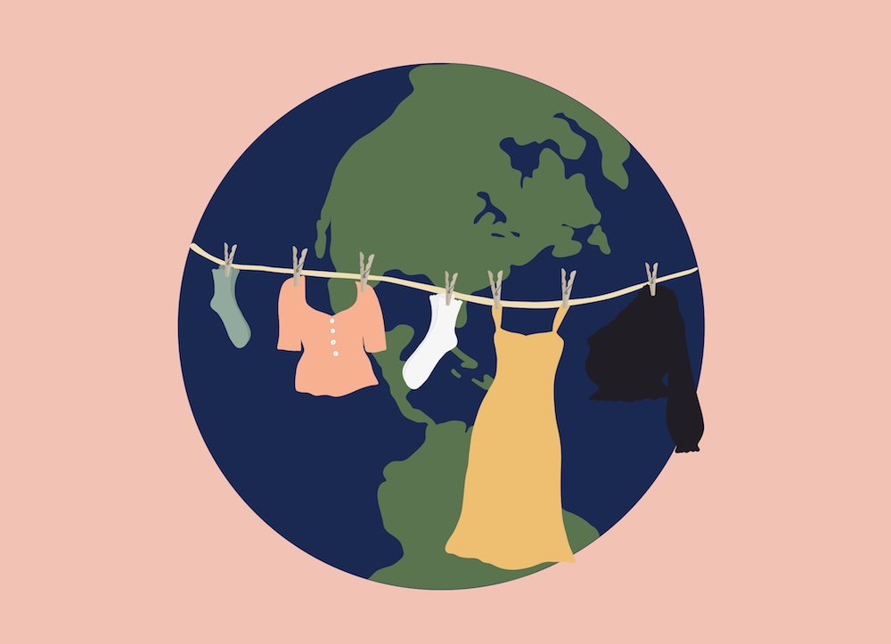
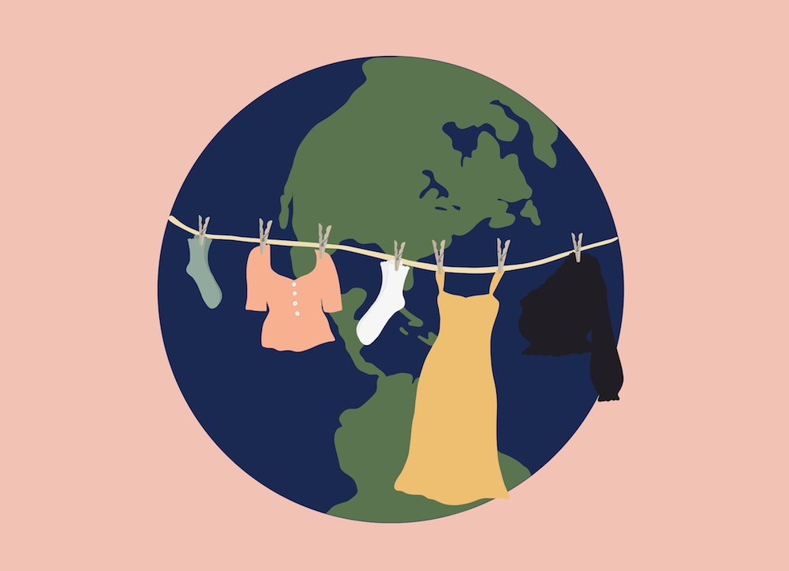
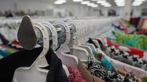
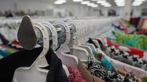

Fight Against Fast Fashion
In the News
How the COVID-19 Pandemic has Changed Fashion Trend Patterns Forever

The “20-year Rule” regarding fashion trends is as old as time. Experts claim that popular clothing trends right now will regain popularity roughly 20 years in the future. Though this rule may seem hard to believe, especially when looking back at old trends like shoulder pads and gaucho pants, there is some serious truth to it. Right now, Y2K fashion trends are all the rage. From velour tracksuits to bedazzled sunglasses, no one can seem to get enough. Yet, two years ago, if you told me I would not only own, but wear a bright pink Juicy Couture tracksuit, I would have laughed in your face.
Read More
Other Stories
5 Ways to Practice Sustainable Fashion
Doing the Impossible: Shopping Sustainably During the Age of Fast Fashion


Thrifting Today

